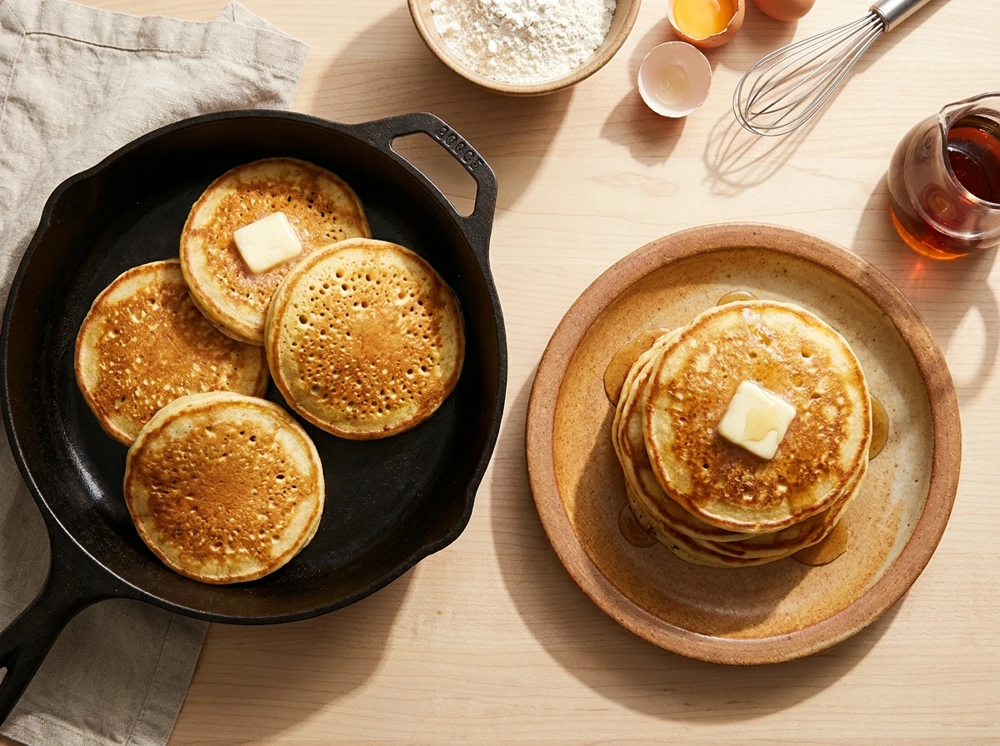

Pancakes

Description
Classic fluffy pancakes made with simple ingredients like flour, milk, and eggs. These pancakes are light, tender, and perfect for a hearty breakfast or brunch. Cooked in a skillet until golden brown, they pair wonderfully with maple syrup, fresh berries, or a dollop of butter.
Ingredients
- 250g Type-45 flour
- 30g sugar
- 11g baking powder
- 300ml low-fat (semi-skimmed) milk
- 3 eggs
- A pinch of salt
- Oil (for cooking)
Steps
- Mix Dry Ingredients: In the bowl of a mixer, combine the flour, sugar, baking powder, and salt.
- Add Wet Ingredients: To the dry ingredients, add the milk and eggs. Mix for about 2 minutes.
- Heat the Pan: Place a skillet or frying pan on high heat. Add a little oil to coat the pan.
- Cook Pancakes: Pour small amounts of batter into the hot pan. Cook the pancakes for about 5 minutes, flipping them halfway through the cooking time.
- Repeat: Continue the process until all the batter has been used.